Explore the story of Lieutenant Titus and the Ultramarines from Amazon's Secret Level.
Secret Level follows Titus and his battle-brothers Chairon and Gadriel during a dangerous mission. The episode showcases the grim darkness of the Warhammer 40K universe.
Ultramarines arrive at the battlefield.
The horrors of the galaxy reveal themselves.
Titus leads the assault.
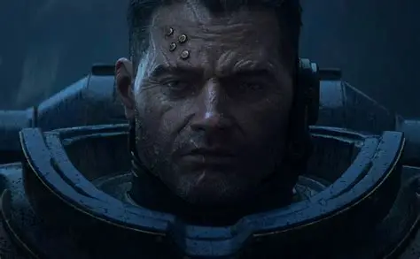
Veteran Ultramarine hero.
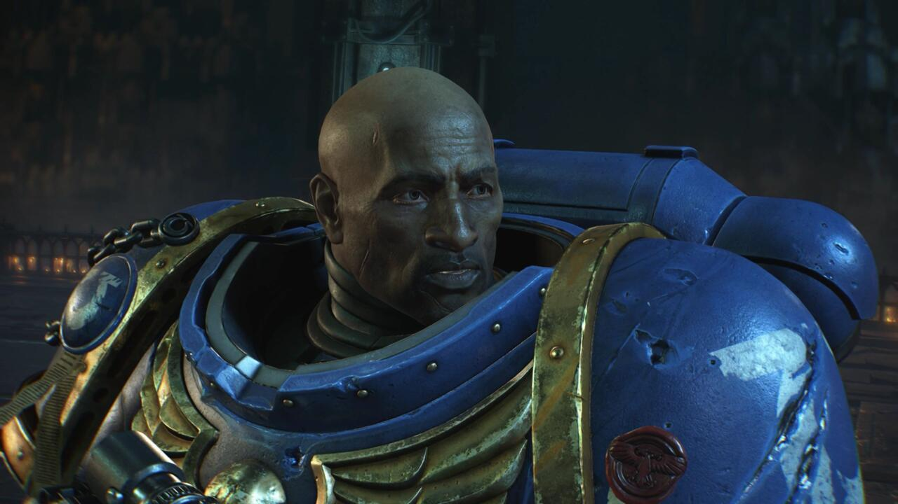
Faithful battle-brother.
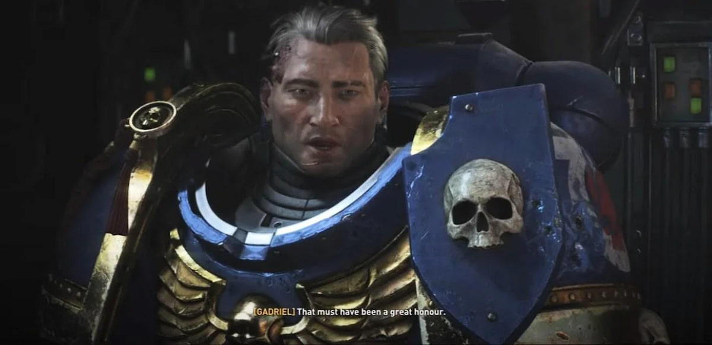
Ultramarine warrior.
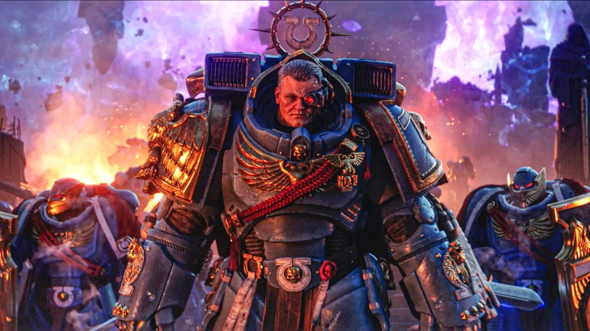
Chapter Master of the Ultramarines.
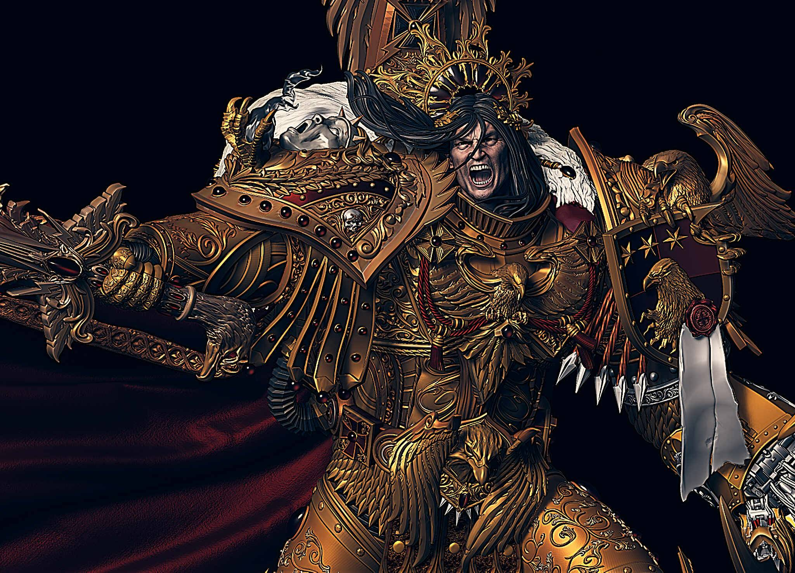
Master of Mankind.
Titus is a legendary Ultramarines officer known for his courage, leadership, and unwavering loyalty to humanity. A veteran of countless battles, he stands as one of the Imperium's greatest heroes.
Learn MoreChairon is a steadfast Ultramarine warrior who fights beside Titus. His discipline, skill, and devotion to the Emperor make him a valuable member of the squad.
Learn MoreGadriel is an experienced battle-brother of the Ultramarines. Fierce in combat and loyal to his duty, he helps Titus overcome overwhelming threats.
Learn MoreChapter Master of the Ultramarines, Marneus Calgar is one of the Imperium's most respected leaders. His wisdom, strength, and strategic genius have saved countless worlds.
Learn MoreThe Emperor is the immortal ruler of humanity and the guiding force behind the Imperium. His influence spans the entire galaxy and inspires billions.
Learn More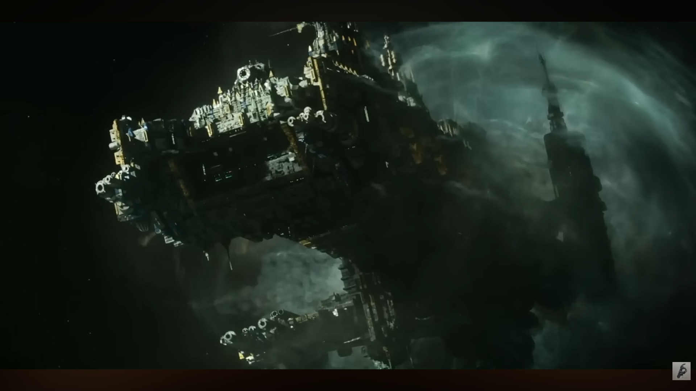
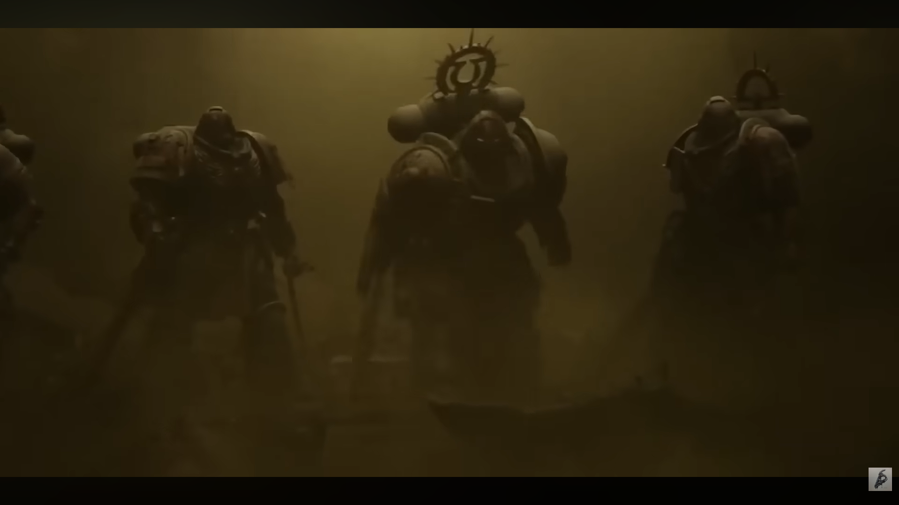
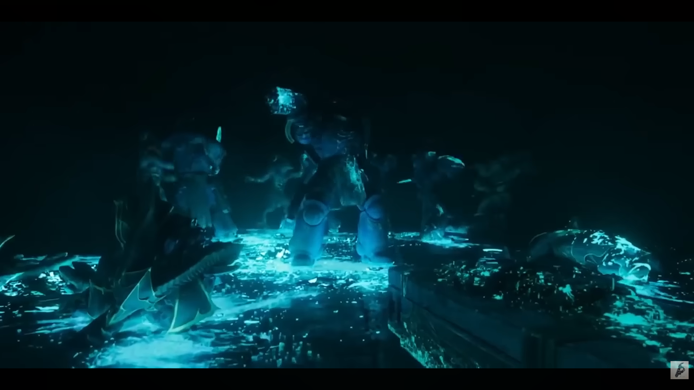
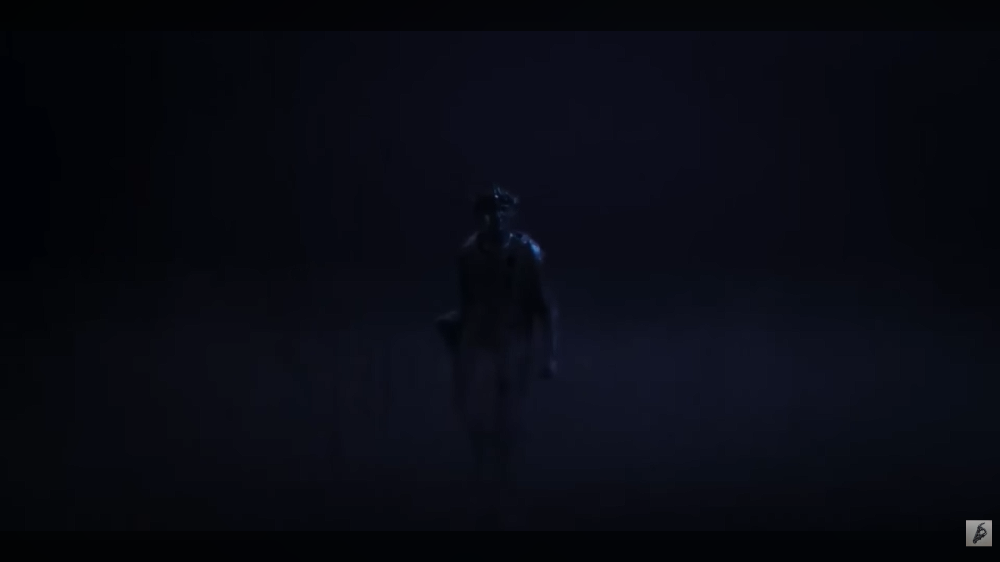
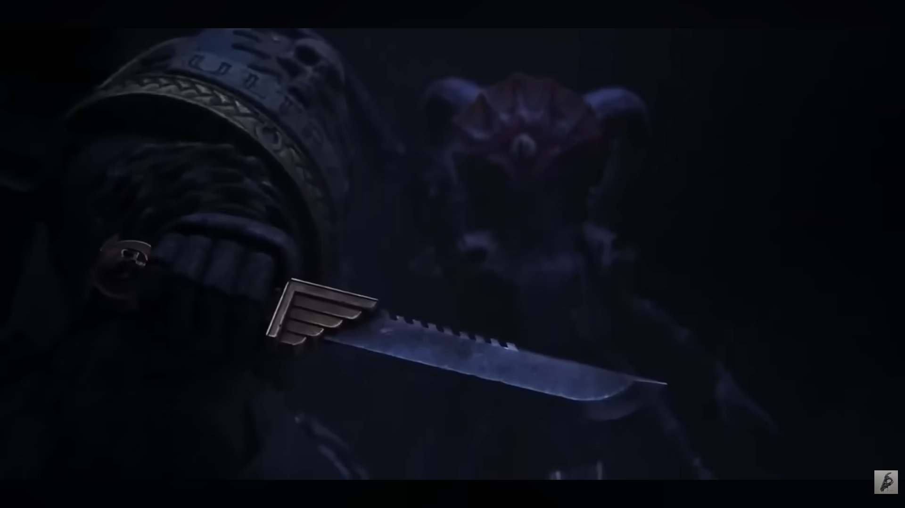
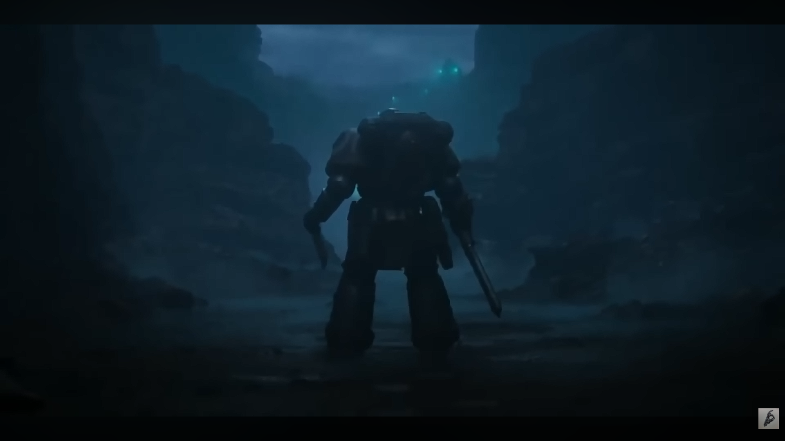
Continue Titus' story and battle the Tyranid hordes in the official game.